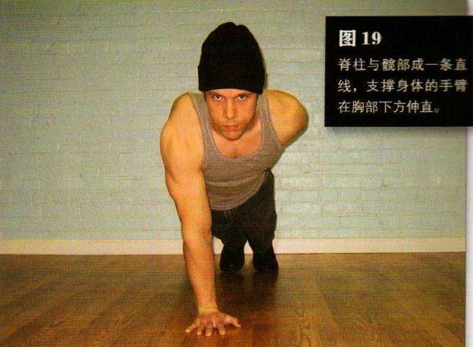
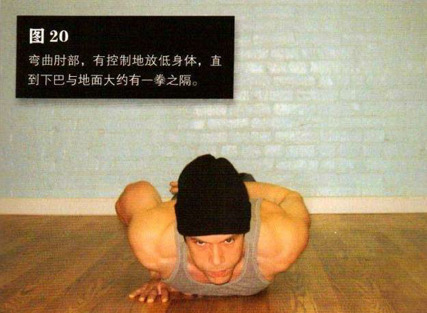

跪在地板上，一只手撑在你前方的地面上。双腿向后蹬直，用脚趾支撑身体。脊柱与髋部成一条直线，支撑身体的手臂在胸部下方伸直——不要在身体侧面或是靠前的位置。稳定之后，把不起支撑作用的那只手背在身后。
弯曲肘部，有控制地放低身体，直到下巴与地面大约有一拳之隔在动作的最低点暂停一下，然后将自己推回到起始姿势。
如果你已经攻克了杠杆俯卧撑，那么单臂俯卧撑对你而言就不是特别恐怖了。但是，如果你还不能标准地完成 5 次单臂俯卧撑，那么你还是回到第九式，确保自己可以标准地完成20 次杠杆俯卧撑。如果你能做到这一点，但做单臂俯卧撑还是有问题，那么请你继续练习杠杆俯卧撑，直到你可以完成 30 次反复，然后再挑战单臂俯卧撑。
初级标准：1 组，5 次
中级标准：6组，各 10 次（每侧）
高级标准：1 组，100 次（每侧）